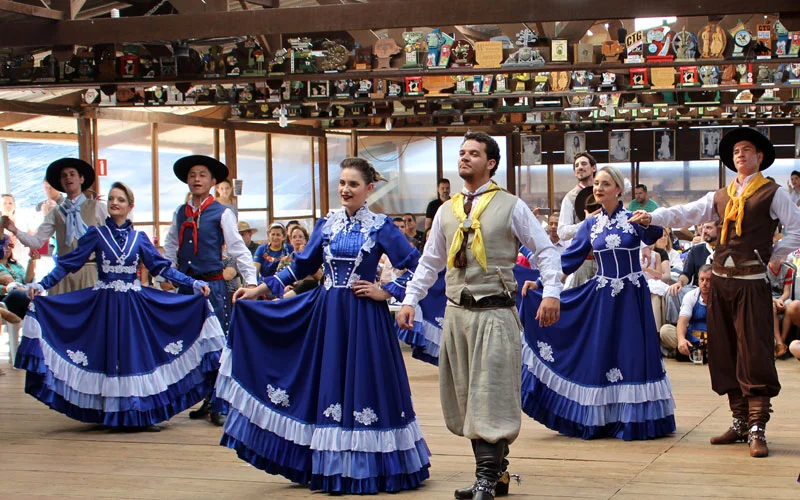
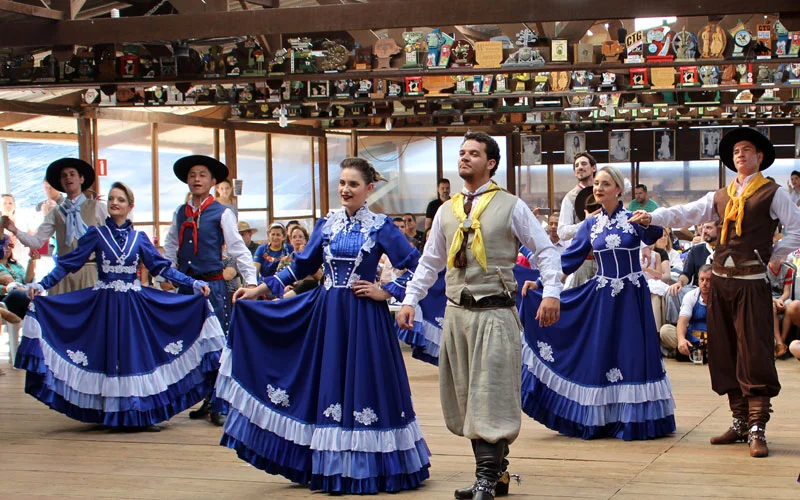

Cultura gaúcha
O Rio Grande do Sul é um estado que possui uma cultura rica e vibrante, marcada por tradições que resistem ao teste do tempo. O chimarrão, os trajes típicos, o CTG, o churrasco e a gastronomia regional são apenas alguns dos elementos que fazem parte desse rico patrimônio cultural. Comida tradicional da cultura gaúcha Com a imigração alemã no início do séc. XIX, a batata passou a ser cultivada na região enquanto que a imigração italiana no final do séc. XIX foi responsável por instalar a cultura da massa, polenta e galeto, além do vinho (que se tornou a principal fonte de renda dos colonos no Rio Grande do Sul). Além disso, a culinária tradicional gaúcha é popular no país inteiro, como o arroz carreteiro, puchero, caca atolada, bolo de carne, charque e ambrosia. Chimarrão O chimarrão é o símbolo da cultura gaúcha. O consumo faz parte do dia a dia dos gaúchos e não só em dias frios, mas também durante o verão. Essa bebida é uma espécie de chá amargo, consumida entre os 60 e 70 °C. O mate é servido em uma cuia e é um legado das culturas indígenas quíncha. Churrasco O gado chegou ao Brasil por meio dos colonizadores e se reproduziu no Rio Grande do Sul. Assim, os gaúchos que comercializam o couro também colocavam a carne em espetos de madeira e assavam no fogo de chão, o que tornou esse tipo de alimentação a base da região. Não tem como falar da cultura gaúcha sem citar o churrasco. Isso porque a carne da região é conhecida por ser mais gostosa e possui particularidades que a tornam única. Por isso, quem visita a região não pode deixar de ir em uma churrascaria de carne gaúcha.
.jpeg) 
